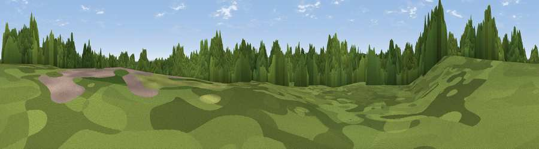

Tower Hill
#45014 in England · top 76% of its area beats it · near South AscotThe view, rendered

A 360° render of this exact spot computed from the terrain model, tree cover and land cover — summer colours, afternoon light, calibrated against photographs of famous viewpoints. Real trees, hedges and buildings will differ in detail.
The panorama
Grey silhouette: terrain skyline in each direction (720 bearings, Earth curvature and refraction included). Dashed green: skyline with trees (+15 m) and buildings (+8 m) as obstacles. Blue strip: how far the ground is visible on each bearing.
Where the view opens
Wedge length = distance to the farthest visible ground on that bearing (vegetation-aware). Rings at 10, 25 and 50 km.
What fills the view
80% woodland · 18% grassland · 2% built-up
Angular shares of the visible panorama (visual magnitude), not map area. Landscape diversity 0.26 (0–1 Shannon).
Key numbers
More beautiful places nearby
The staircase of upgrades: each row has a higher view potential than everything closer. Driving times are estimates from straight-line distance, calibrated against real road routing — check an actual route before setting out.
| Place | Direction | Drive | Score |
|---|---|---|---|
| Viewpoint near Bagshot | SW · 2 km | ~6 min | 42.2 |
| Viewpoint near Valley End | ESE · 5 km | ~10 min | 42.8 |
| High Curley Hill | S · 5 km | ~11 min | 49.7 |
| Viewpoint near Bishopsgate | NE · 10 km | ~20 min | 53.6 |
| Viewpoint near Upper Hale | SSW · 18 km | ~31 min | 58.3 |
| Viewpoint near Puttenham | S · 18 km | ~31 min | 62.0 |
| Viewpoint near Wanborough | S · 18 km | ~32 min | 65.5 |
| Viewpoint near Compton | SSE · 19 km | ~32 min | 66.7 |
51.39003, -0.70041 · source: osm peak · position refined by local search. Computed location — check access rights before visiting.